Плоские примитивы
В этом разделе приводятся плоские примитивы. Обычно они используются совместно с 3д операциями для построения тел со сложной геометрией.
Rectangle
Плоский примитив - прямоугольник. Задаётся двумя сторонами. Если задать только одну сторону, будет построен квадрат. Установка опции center совмещает геометрический центр тела с началом координат. При установке опции wire вместо залитой грани будет сгенерирован каркас.
rectangle(x, y, center=True/False, wire=True/False)
rectangle(a, center=True/False, wire=True/False)
square(a, center=True/False, wire=True/False) #alternate
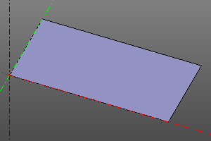
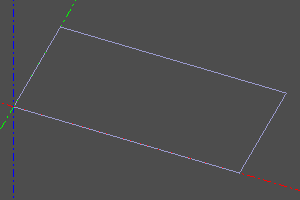
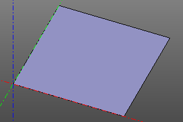
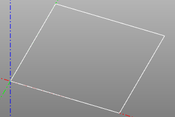
Circle
Плоский примитив - окружность/круг. Задаётся радиусом. Также можно построить сектор, указав угол или пару углов.
При установке опции wire вместо залитой грани будет сгенерирован каркас.
circle(r=radius, wire=True/False)
circle(r=radius, angle=angle, wire=True/False)
circle(r=radius, angle=(start, stop), wire=True/False)
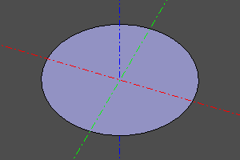
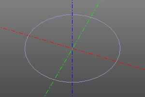
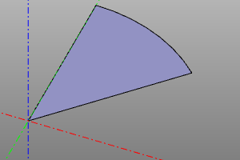
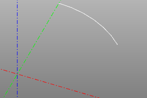
Ellipse
Плоский примитив - эллипс. Задаётся двумя радиусами, причем r1 должен быть больше r2. Также можно построить сектор, указав угол или пару углов.
При установке опции wire вместо залитой грани будет сгенерирован каркас.
ellipse(r1=major, r2=minor, wire=True/False)
ellipse(r1=major, r2=minor, angle=angle, wire=True/False)
ellipse(r1=major, r2=minor, angle=(start, stop), wire=True/False)
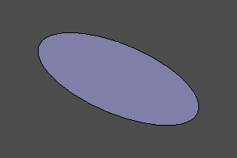
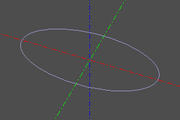
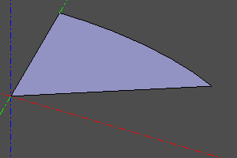
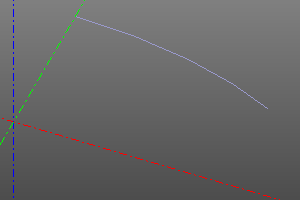
Polygon
Плоский примитив - полигон. Строится по точкам вершин.
При установке опции wire вместо залитой грани будет сгенерирован каркас.
pnts - массив точек.
polygon(pnts=pnts, wire=True/False)
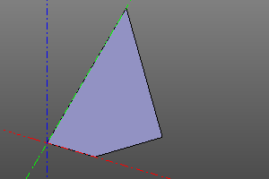 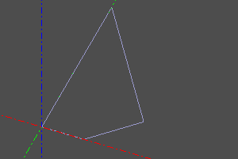
Ngon
Плоский примитив - правильный многоугольник. Задаются радиус и количество вершин.
При установке опции wire вместо залитой грани будет сгенерирован каркас.
ngon(r=radius, n=vertexCount, wire=True/False)
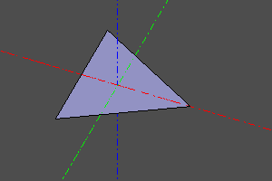
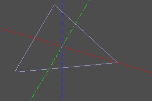
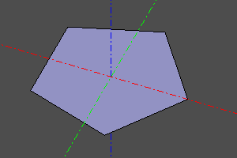
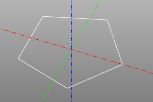
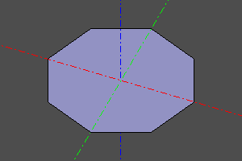
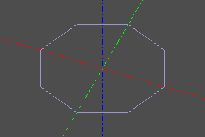
Textshape
Плоский примитив - текст. Создаёт грань на основе строки и шрифта. Шрифт указывается в виде пути на файл формата ttf (FreeType).
textshape(text=textString, fontpath=pathToFont, size=fontSize)
 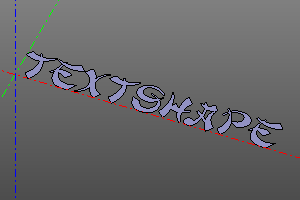
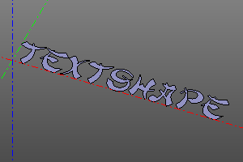